Mutsuzawa, Chiba: things to do, food and stays
Mutsuzawa · Chiba
Mutsuzawa
Highlighted on the Chiba map.
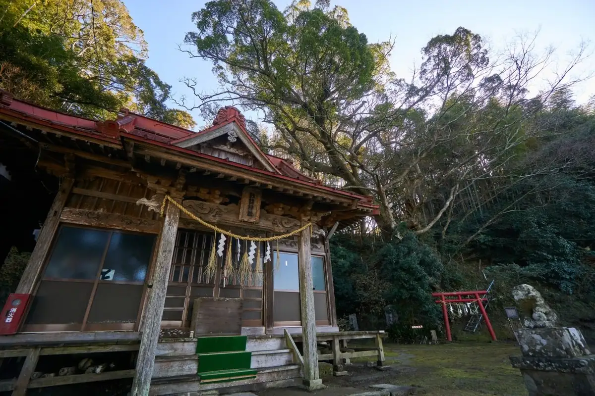
Stay
No bookable places to stay found in Mutsuzawa — nearest options in Ichinomiyamachi.
Dining
新生酪農千葉工場アイスクリームショップ
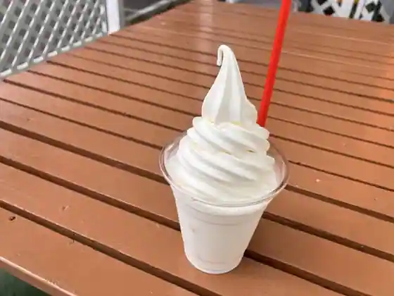
Shinsei Rakuno Chiba Kojo Aisukurimushoppu
房総カントリークラブレストラン
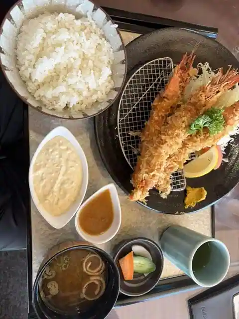
Boso Kantorikurabu Restaurant
お食事処おだか
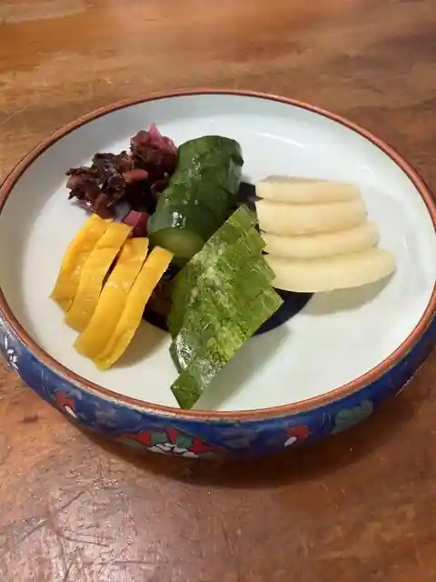
O Shokuji Tokoro Odaka
縁
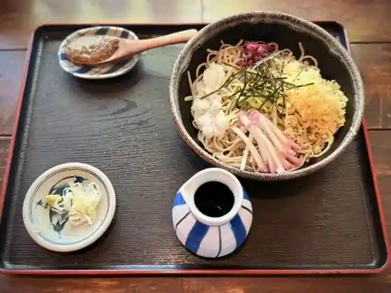
Heri
房総カントリークラブ 大上ゴルフ場レストラン
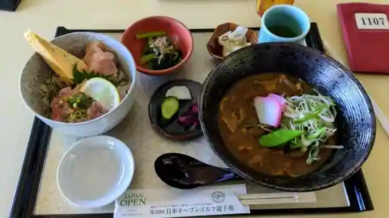
Boso Kantorikurabu Oe Gorufu Ba Restaurant
トラットリア ドゥーエ
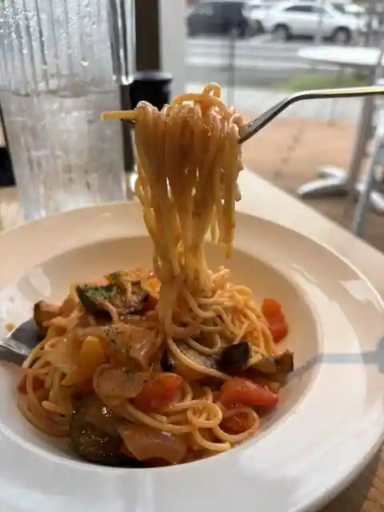
Trattoria Doue
石窯工房 Pain de naru
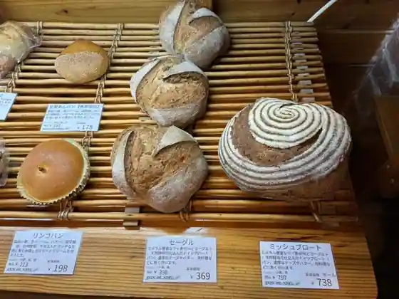
Ishigama Kobo Pain de naru
道の駅むつざわ つどいの郷
Michi No Eki Mutsuzawa Tsudoino Sato
sou
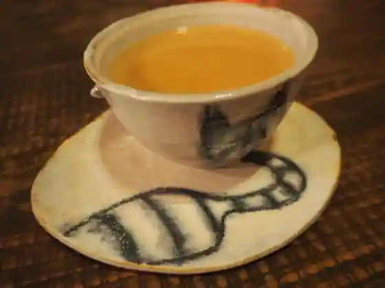
sou
またの食堂
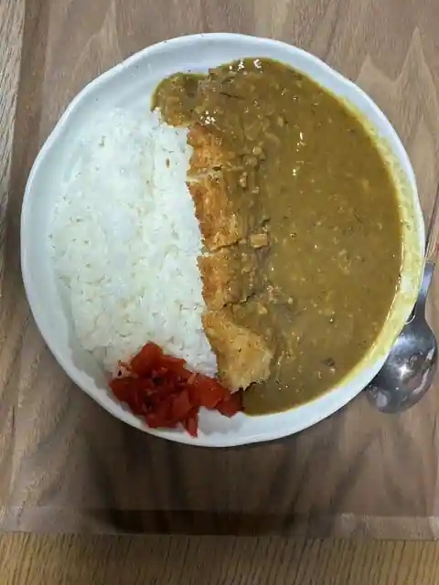
Matano Shokudo
フラココ
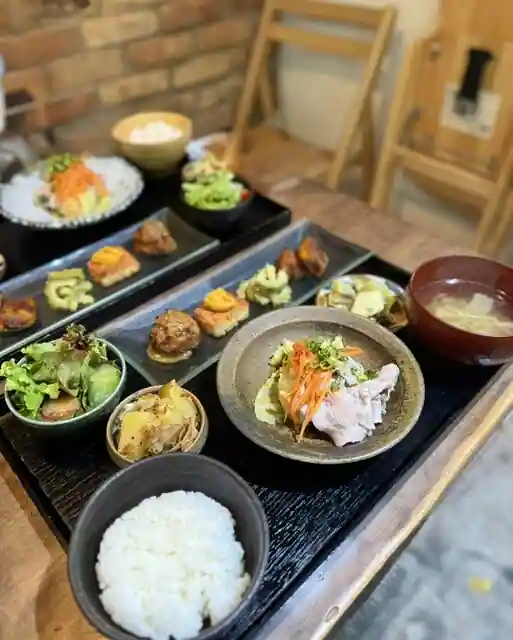
Furakoko
森
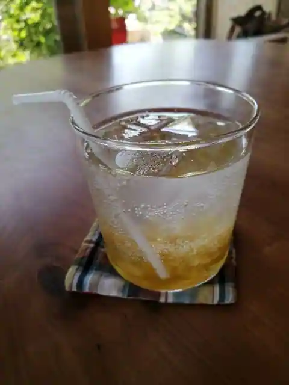
Mori
寿し処たなか
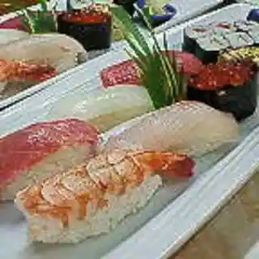
Hisashi Shi Tokoro Tanaka
睦沢名物うまいもん
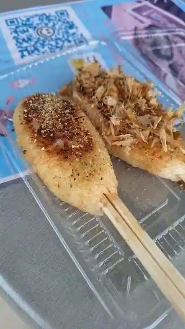
Mutsuzawa Meibutsu Umaimon
ガトータナベ
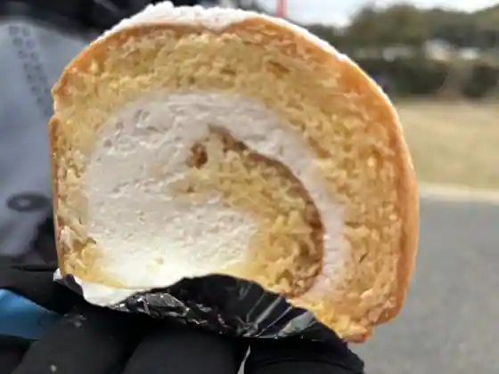
Gatotanabe
ちぃととの台所
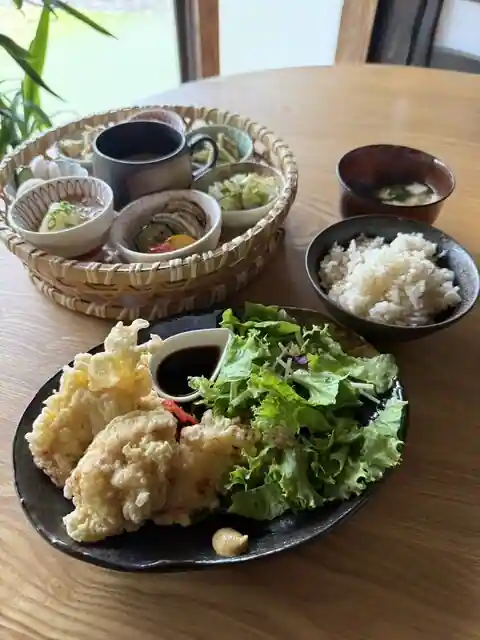
Chitotono Daidokoro
タナベクレープ
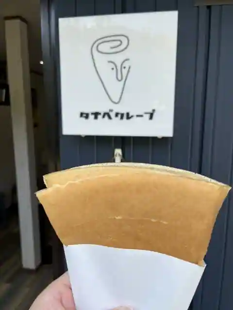
Tanabekurepu
お寺カフェ そわか
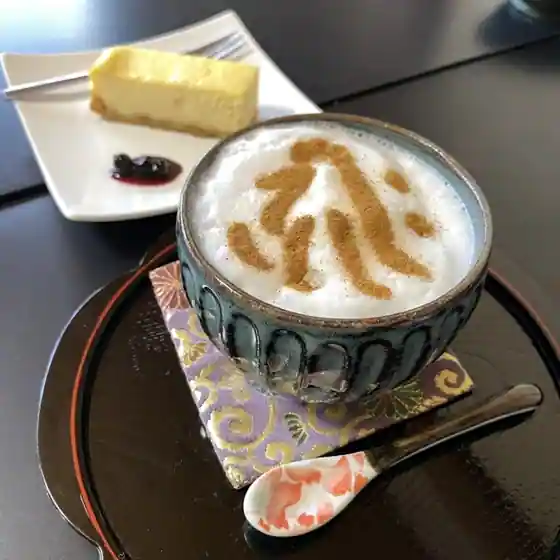
O Tera Cafe Sowaka
お結び屋 華利休
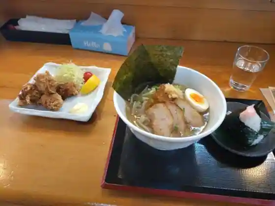
O Musubi Ya Hana Rikyu
喫茶 匠
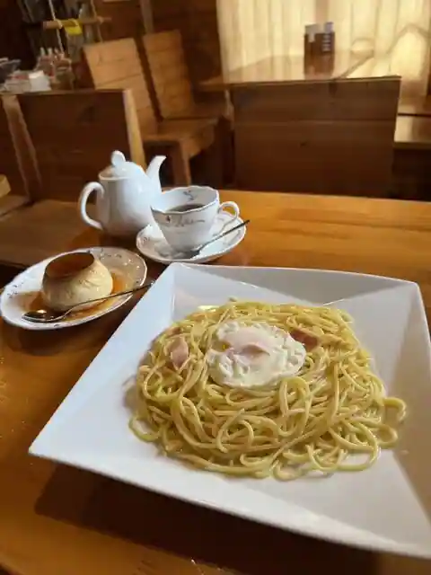
Kissa Takumi
COW7215
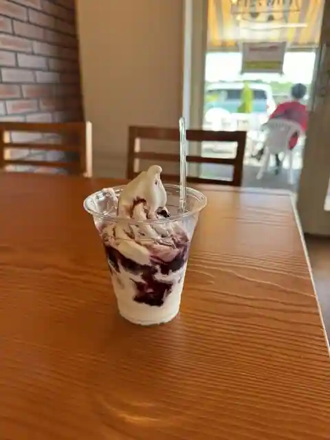
COW7215
珈琲とこぐま
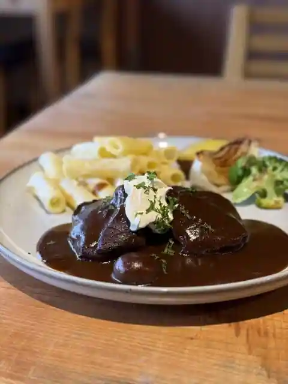
Coffee Tokoguma
むつざわ温泉つどいの湯 軽食コーナー
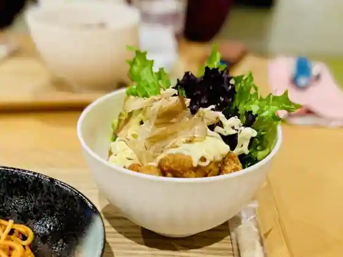
Mutsuzawa Onsen Tsudoino Yu Keishoku Kona
杏樹
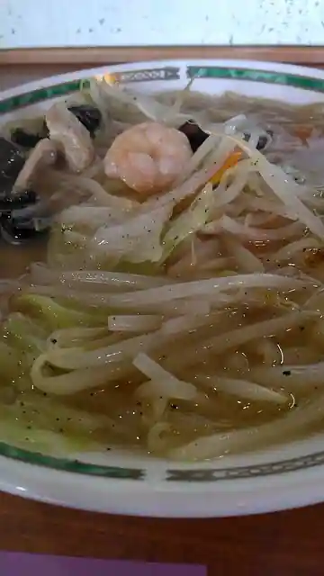
Anju
Sights
Roadside Station Mutsuzawatsudoi no Sato
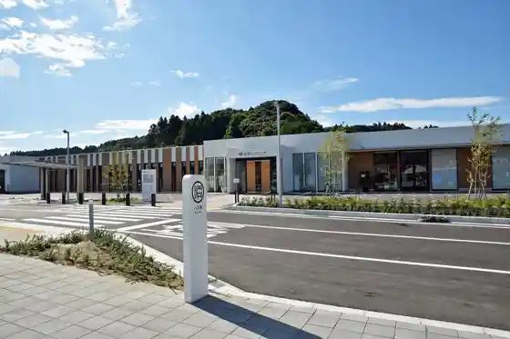
Myoraku Tera
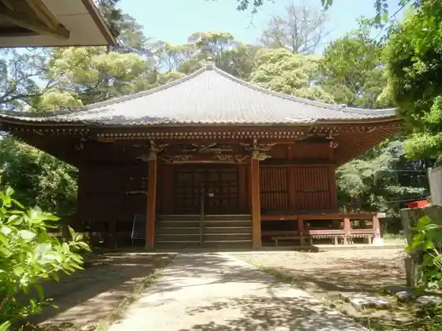
Suwa Shrine
O Tera Kafe Sowaka
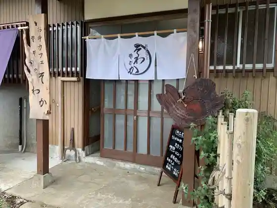
U Hane Shrine
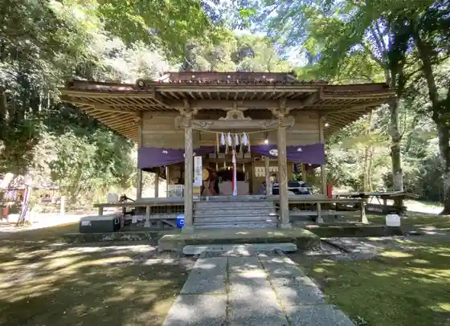
Yamada Farm